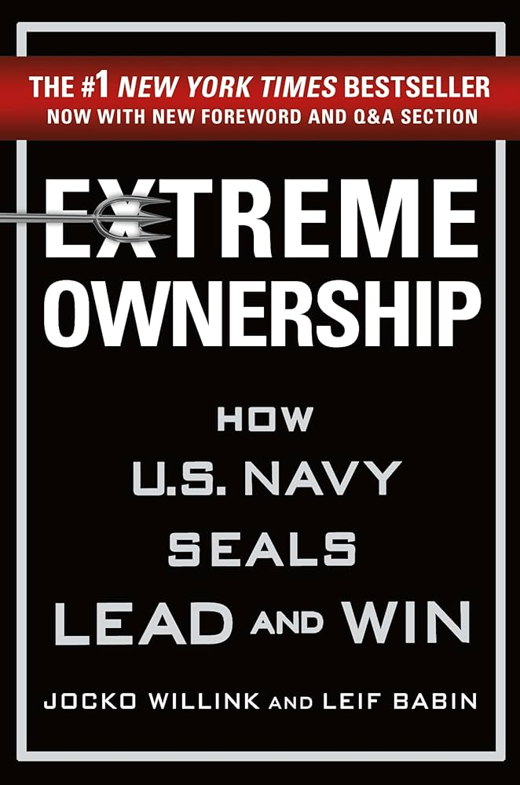

Assignment 4.2: Build a Web Page Exercise - Part 4
The Martian
author: Andy Weir
Altered Carbon
author: Richard Morgan
Extreme Ownership

author: Jocko Willink and Leif Babin
Back to Github Portal
 author: Andy Weir
author: Andy Weir